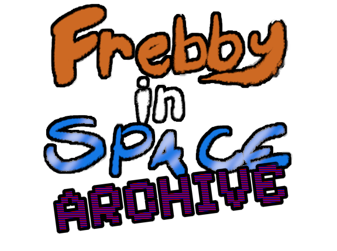
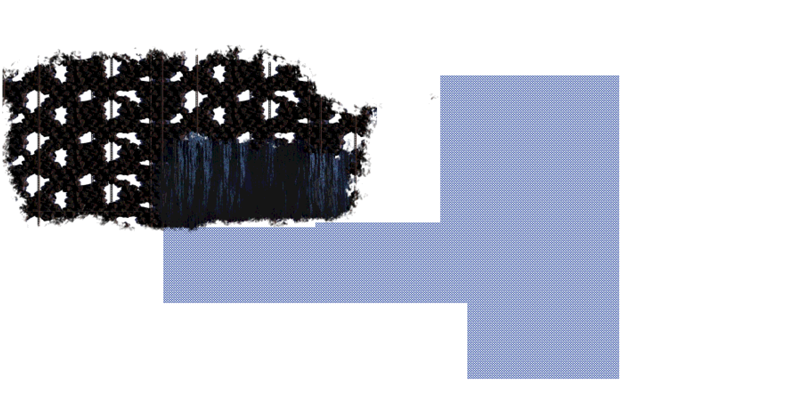
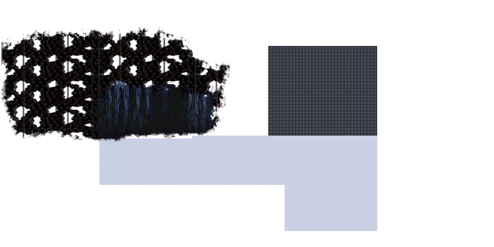
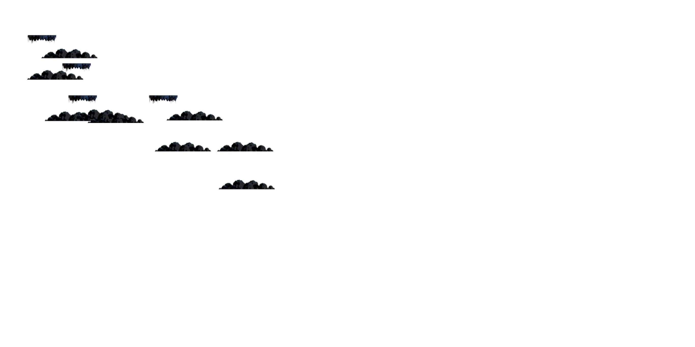
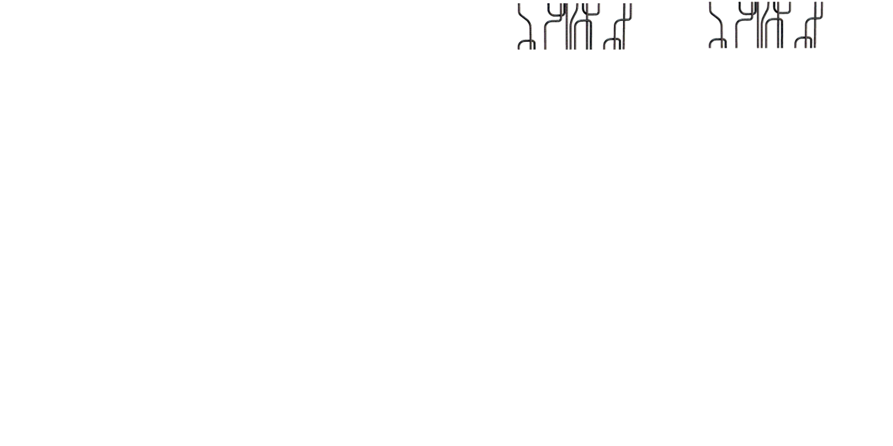
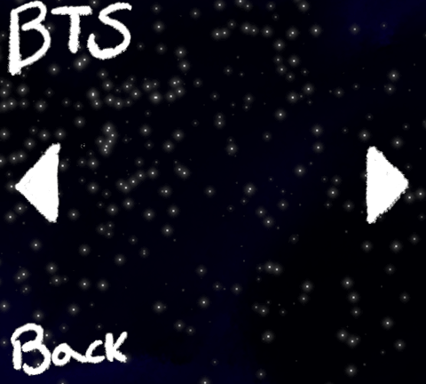
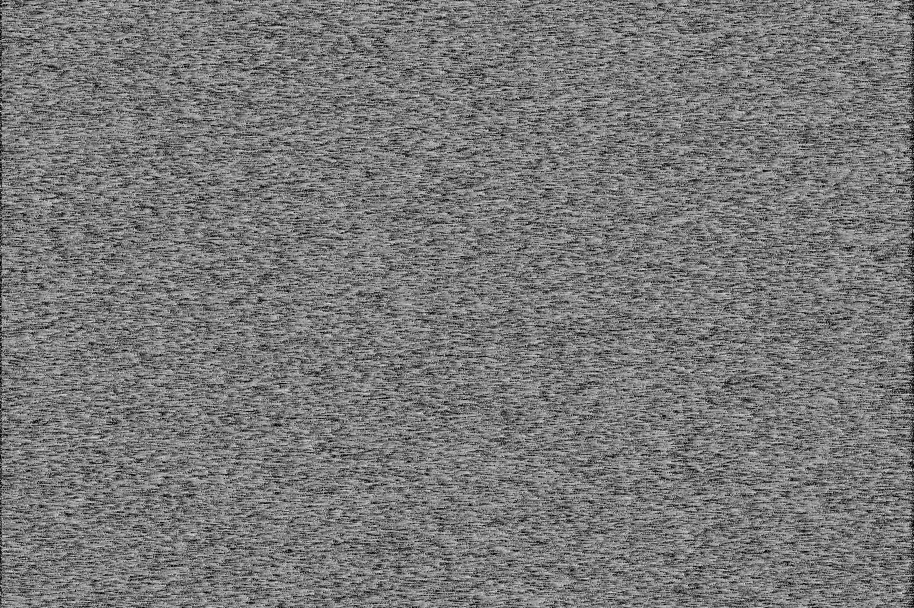
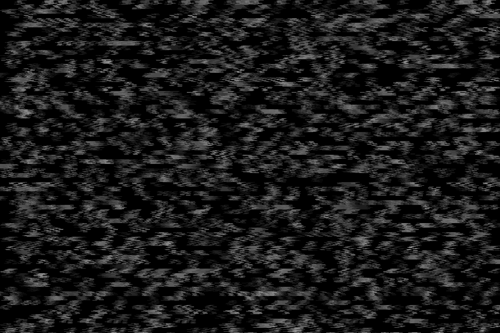
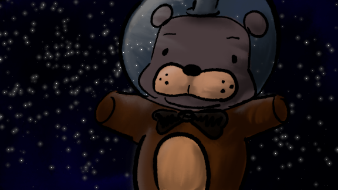
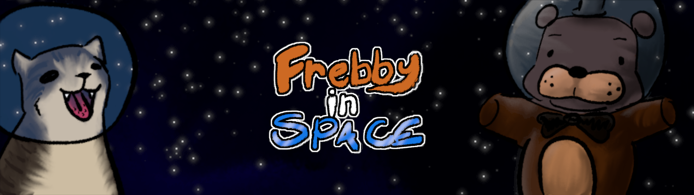

Unused Content


Unused map backgrounds


Unused foreground + pipes foreground(used ingame)

Unused Behind the Scenes screen from the Extras menu.


Unused static effects for Scott's dialog
Artwork

Menu background

Promo banner
Development Screenshots

Early tiled game map

Random Gamemaker screenshot I took
Update 2 Content
Content planned for Update 2 that will sadly never see the light of day.

Unused updated bullet sprites


Shopkeeper design and sprite, he's called Telly V.


Robs dialog sprites. I planned on Update 2 being a glitchy unfinished area where I, the dev, would talk to the player instead of Scott, with full voice acting.
(Very Cringey) Placeholder VA for some of the dialog, I was gonna rerecord it later but that never happened.

Tileset used for the game's scenery, includes unused graphics for the Update 2 glitch area.
Programs Used
Digital Art - GIMP
Spritework - LibreSprite
Programming - GML
Overall Development - Gamemaker Free Edition
Website Coding - VSCode